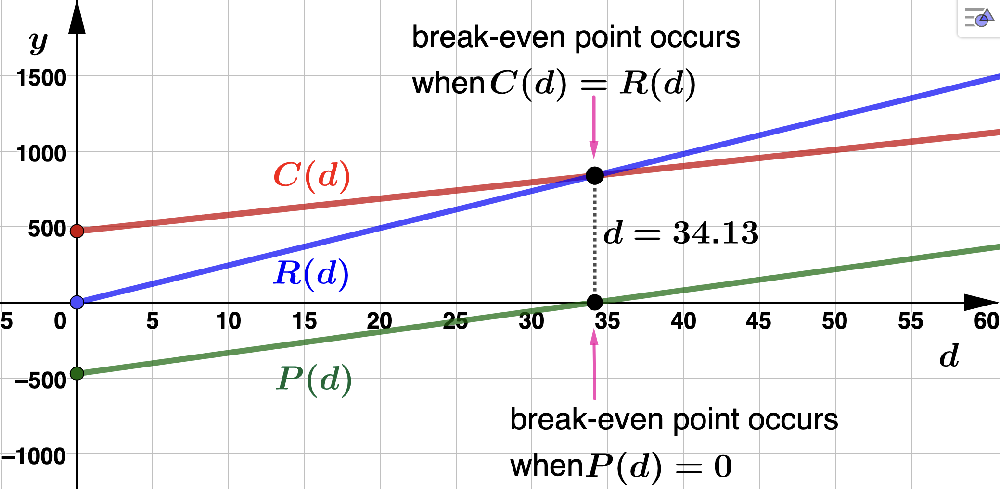
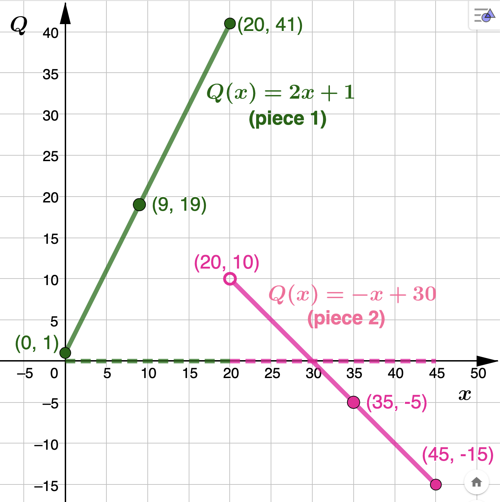

Section 2.3 Linear Functions and Applications
Observe that without a context given, the domain and range of any linear function is \(\mathbb{R} = (-\infty,\infty)\text{.}\)
The examples in this section will be similar to those in Section 1.3 except now we will express linear models using function notation. For instance, \(y = mx + b\) will instead be written as \(f(x) = mx + b\) where we call \(x\) the input variable (horizontal axis) and \(f\) or \(f(x)\) the output variable (vertical axis).
Observe that the slope, \(m \text{,}\) of a linear function gives the function's rate of change. Conversely, every rate of change can be viewed as the slope of a lline. Being able to interpret a slope as a rate of change will be extrememly important in many examples. For instance, if \(g(t) = -3t +5\) then the slope \(m = -3 = \dfrac{-3}{1}\) means that the output variable \(g\text{,}\) or \(g(t)\text{,}\) decreases by 3 units as the input variable \(t\) increases by 1 unit. Since many problems will be applications, you should also be able to associate units with the slope to help with interpretation. Again, with \(g(t) = -3t +5\text{,}\)
\begin{equation*}
m = \dfrac{-3}{1} \: \dfrac{\textrm{units of g}}{\textrm{units of t}}.
\end{equation*}
So, if \(g(t)\) gives the value of an asset in hundreds of dollars, and \(t\) represents time in years, then we interpret \(m=-3\) as: The value of asset decreases by 3 hundred dollars (the change in \(g\) ) per each additional year (the change in \(t\)).
Recall the definitions of cost, revenue, and profit given in Section 1.3. We now look at these basic business relationships as linear functions. To fix ideas, suppose below that cost, revenue, and profit are dollar amounts that depend on a certain number of items produced.
- Cost Function = (cost per item)(number of items) + fixed costs
- Revenue Function = (price per item)(number of items)
- Profit Function = Revenue Function - Cost Function
Suppose that \(k=\)cost per item, \(p=\)price per item, and \(F=\)fixed costs. Using \(C, R\) and \(P\) respectively for cost, revenue, and profit, and \(x=\)number of items as the input variable, we have
- Cost Function = \(C(x) = kx + F\)
- Revenue Function = \(R(x) = px\)
- Profit Function = \(P(x) = R(x) - C(x) \)
So, with respect to the defintions given above, to find the number of units a company should produce and sell to break-even, you solve \(R(x) = C(x)\) or equivalently, \(P(x) = 0\text{.}\)
While the following functions are NOT linear, it is worth defining them here as they will appear in many examples.
- Average Cost \(=\bar{C}(x) = \dfrac{C(x)}{x}\)
- Average Revenue \(=\bar{R}(x) = \dfrac{R(x)}{x}\)
- Average Profit \(=\bar{P}(x) = \dfrac{P(x)}{x}\)
Note that in all the functions discussed above, we used \(x=\)number of items as the input variable. Another common input variable for these business functions is \(t=\)some unit of time. Also, the output units of these functions may be, say, thousands of dollars instead of dolllars. Make sure you read each problem carefully and understand the role each variable is playing.
Example 2.3.2.
- Find CVL's cost function, \(C(d)\text{,}\) for this antidepressant drug. Solution.With the cost per unit given as $10.75, we have\begin{equation*} C(d) = 10.75d + F \end{equation*}To find \(F\) we use the fact that CVL's total cost for producing \(d=98\) units is $1523.82. That is\begin{equation*} C(98) = 10.75(98) + F = 1523.82 \end{equation*}which gives \(F= 470.32\) so that\begin{equation*} C(d) = 10.75d + 470.32 \end{equation*}From the cost model above we see that CVL's fixed costs are $470.32 Observe also that the cost per unit is the slope \(m=10.75\) of \(C(d)\text{.}\) So, CVL's cost increase by $10.75 for every addtional unit of the antidresspant drug they produce.Make sure you are aware of the role the variables play when you work through these examples. For this model, the input variable is \(d\) which represents the number of units of the antidepressant drug produced by CVL. The output variable is \(C(d)\) which represents CVL's cost in dollars for producing \(d\) units of the antidpressant drug. You should take a minute to identify the variables and write a sentence to describe them as you work through all these examples.
- Find CVL's revenue function, \(R(d)\text{,}\) for this antidepressant drug. Solution.With the price per unit given as \(p=$24.53\text{,}\) CVL'S revenue function for this drug is\begin{equation*} R(d) = 24.53d \end{equation*}Notice that the price per unit is the slope \(m=24.53\) of the revenue model. This means CVL's revenue increases by $24.53 for every addtional unit of the antidresspant drug they produce and sell.
- Find the CVL's profit model, \(P(d)\text{.}\) Then find and interpret the average profit from producing and selling \(d = 272\) units of the antidepressant drug Solution.We subract the cost function from the revenue function:\begin{align*} P(d) \amp = R(d) - C(d) \\ P(d) \amp = 24.53d - (10.75d+470.32) \\ P(d) \amp = 13.78d-470.32 \end{align*}Notice that the slope of the profit model is \(m=13.78\text{.}\) This means CVL's profit increases by $13.78 for every addtional unit of the antidresspant drug they produce and sell.Now, \(P(272) = 3,277.84\text{,}\) which means CVL's profit from producing and selling 272 units of the antidepressant drug is $3,277.84. To calculate the average profit we divide this by the number of units:\begin{equation*} \textrm{Average Profit} = \dfrac{P(272)}{272} = 12.05 \end{equation*}So, CVL's average profit from producing and selling \(d=272\) units of the antidresspant drug is $12.05 per unit or\begin{equation*} 12.05 \dfrac{\textrm{dollars}}{\textrm{unit of the drug}} \end{equation*}Notice that the units for average profit (as well as average cost and average revenue) are\begin{equation*} \dfrac{\textrm{units of output}}{\textrm{units of input}}. \end{equation*}
- How many units of the drug should CVL produce and sell in order to break even? Solution.The break-even point occurs when CVL's profit is $0. So, we solve\begin{align*} P(d) \amp = 0 \\ 13.78d -470.32 \amp = 0 \\ d \amp = 34.13 \end{align*}Recall that we always round up to identify the break-even point. So, CVL must produce and sell \(d=35\) units of the antidepressant drug to break even. See the figure below for an illustration of the models and break-even point.
Example 2.3.3.
\(D(t)\) will have the form \(D(t) = mt +b\) where the slope \(m\) will be the rate of depreciation per year. Let's start by finding the slope, \(m\text{.}\) We are given the data points \((0,24535)\) and \((3,17020)\) so that
\begin{equation*}
m= \dfrac{24,535-17,020}{0-3} = -2,505
\end{equation*}
Since we are given the \(D-\)intercept (the vertical intercept) we see that
\begin{equation*}
D(t)=-2,505t + 24,535.
\end{equation*}
In 5 years the car will be worth \(D(5) = -2,505(5) + 24,535 = $12,010\text{.}\) Note that \(m=-2,505\) means the car depreciates by \$2,505 per year.In the next example we'll be working with what is called a piecewise linear function. It's called piecewise because the function is split into multiple pieces over difference parts of its domain. When writing a piecewise function the rule identifying the action of the function is indicated on the left, with the corresponding input values to the right. For instance
\begin{equation*}
Q(x) = \left\{
\begin{array}{ll}
2x + 1, \quad 0 \leq x \leq 20 \\ \\
-x + 30, \quad 20 < x \leq 45
\end{array}
\right.
\end{equation*}
says that \(Q(x)=2x+1\) only when \(0 \leq x \leq 20\) and \(Q(x)=-x+30\) only when \(20 < x \leq 45\text{.}\) To evaluate, we have to identify which piece to use:
- To evaluate at \(x=9\text{,}\) we observe that \(0 \leq 9 \leq 20\) so \(Q(9) = 2(9) + 1 = 19\)
- To evaluate at \(x=35\text{,}\) we observe that \(20 < 35 \leq 45\) so \(Q(35) = -35 + 30 = -5\)
The graph of \(Q(x)\) is below. Observe that the domain values that correspond to each piece of \(Q(x)\) are identified using dotted lines along the horizontal axis. Why is there an open circle identifyng the piont \((20,10)\text{?}\)

Example 2.3.4.
- In 2010 ADTF Distributors' profit from producing and selling Doggie DNA Kits was $10,042. Their profit was $21,634 in 2016. Find ADTF Distributors' linear profit model between these years. Solution.We are given the data points \((0,100.42)\) and \((6,216.34)\text{.}\) Finding the line through these points we see that ADTF Distributors' profit model from 2010 up to and including 2016 is\begin{equation*} P(t) = 19.35t + 100.42 \end{equation*}
- From 2016 to 2021, ADTF Distributors determined that their profit increased at rate of $4,974 per year until their profit reached $60,234 in 2021. Find ADTF Distributors' linear profit model between 2016 and 2021 Solution.We are given the slope to be \(m=49.74 \: \dfrac{\textrm{dollars}}{\textrm{year}}\) and data point \((11,602.34)\text{.}\) Finding the line with these conditions we see that ADTF Distributors' profit model from 2016 to 2021 is\begin{equation*} P(t) = 49.74t + 55.2 \end{equation*}
- Epress \(P(t)\) as a piecewise linear model. Solution.\begin{equation*} P(t) = \left\{ \begin{array}{ll} 19.35t + 100.42, \quad 0 \leq t \leq 6 \\ \\ 49.74t + 55.2, \quad 6 < t \leq 11 \end{array} \right. \end{equation*}You should graph this piecewise functon \(P(t)\) for homwork.
Recall that every rate of change is the slope of line and vice versa. In particular, if \(f(x) = mx+b\) then the rate of change of \(f(x)\) is its slope, \(m\) (that is, if the input \(x\) increases by 1 unit, then the output \(f(x)\) changes \(m\) units). In business, marginal analysis compares the additional benefits (revenue and profit) derived from an activity and the extra cost incurred by the same activity. These additaional benefits/costs are referred to as marginal revenue, marginal profit, and marginal cost.
As an example, Vandelay Industries, a global importer and exporter of fine latex goods, determines their profit in thousands of dollars from the years 2006 to 2020 can be model by \(P(t) = 38.46t + 161.54\) where \(t\) is the number of years since 2006. Looking at the slope of \(P(t) \text{,}\) we see that Vandelay Industries' profit increased at a constant rate of $38,460 per year from 2006 to 2020. So, Vandelay Industries' margainal profit from 2006 to 2020 was $38,460 per year. If we let \(MP(t)\) denote the marginal profit function, we have \(MP(t) = 38.46 \) (a constant function).
If a company's cost, revenue, or profit model is linear, then the corresponding marginal function will simply be the slope (as we found in the example above). The units for the output values of the marginal functions will therefore be same as those for the slope of the original business model. In subsequent chapters we will see that if our business model is NOT linear, the correspondong marginal function will in general NOT be constant.
Example 2.3.5.
- Find ADTF Distributors' cost model, in dollars, for these dining room chairs. Solution.We are given the data points \((255,11462)\) and \((520,21400)\text{.}\) Finding the line through these two points and letting \(x\) represent the number of dining room chairs procuded by ADTF Distributors we determine that the cost model is\begin{equation*} C(x)=37.5x+1899.02 \end{equation*}for \(x \geq 0\text{.}\) Notice that ADFT Distributors' fixed costs are $1,899.02.
- Find the marginal cost assiciated with manufacturing 372 dining room chairs. Solution.First, ADTF Distributors' marginal cost model is the constant function\begin{equation*} MC(x)=37.5. \end{equation*}Therefore,\(MC(372) = 37.5\) meaning: When ADTF Distributors manufactures \(x=372\) dining room chairs, their cost increases at a rate of $37.5 per additional chair manufactured. In other words, the cost of manufacturing the 373rd dining room chair is $37.50